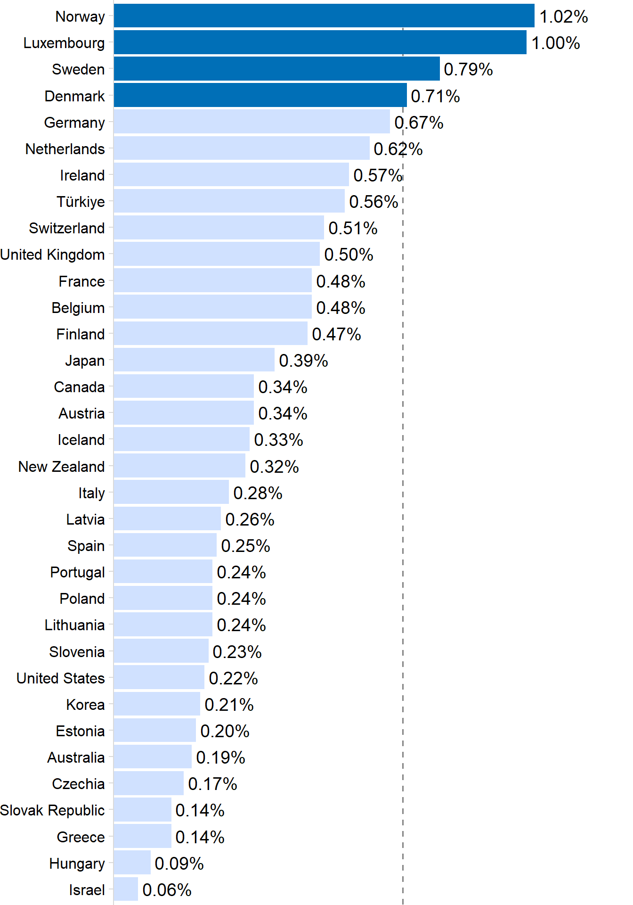
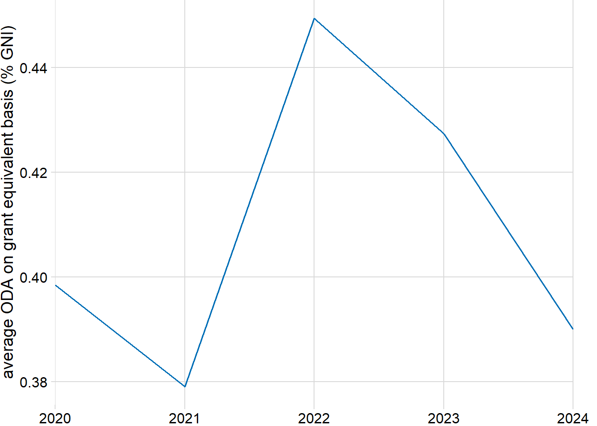
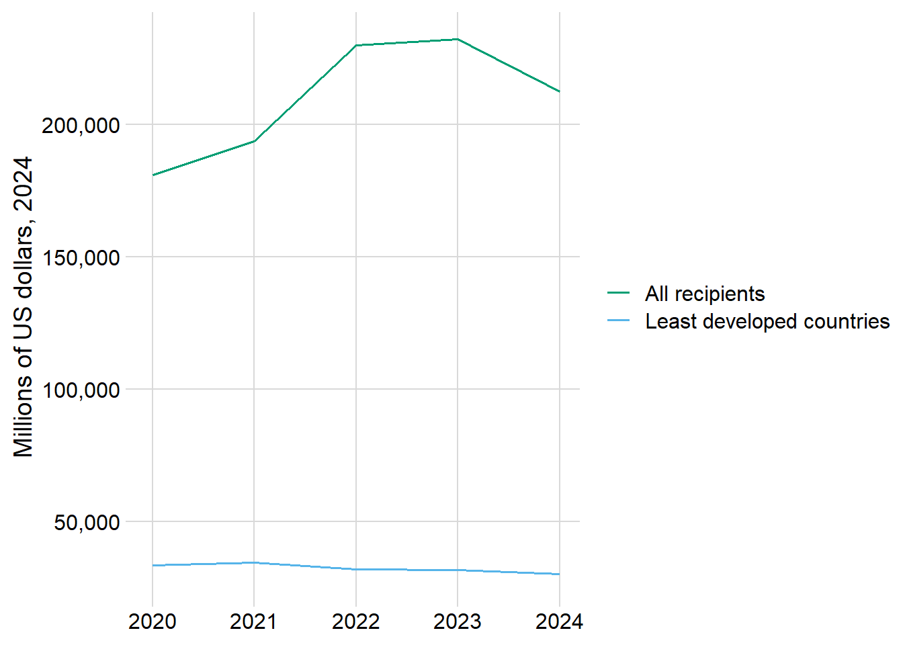
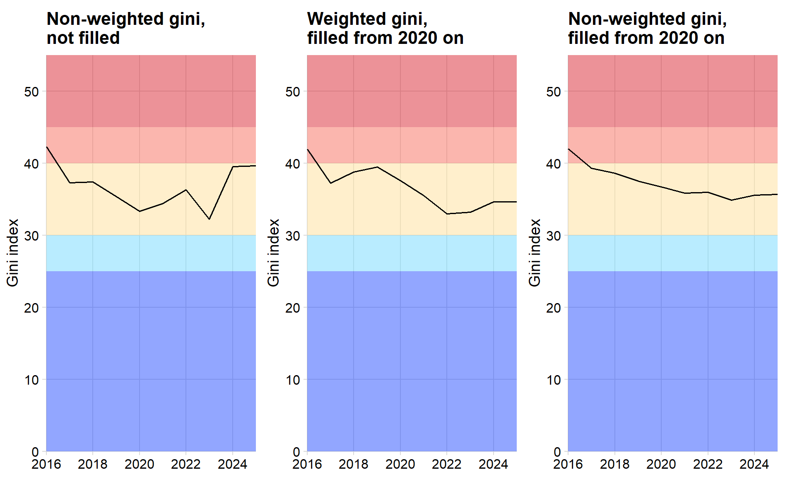
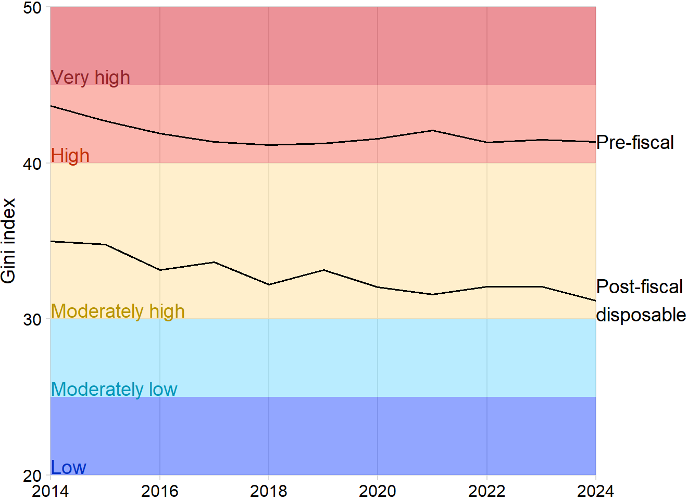
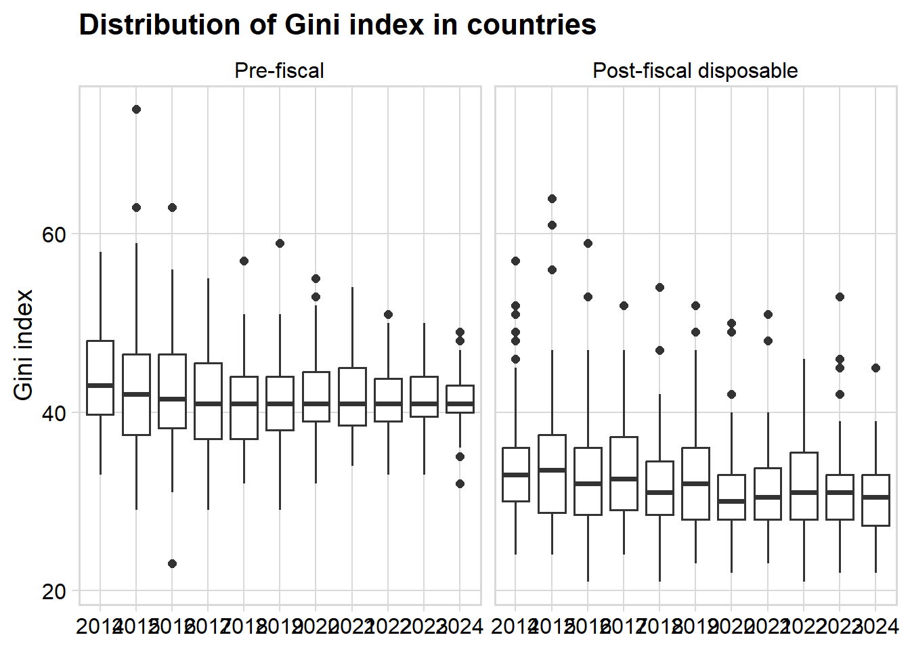
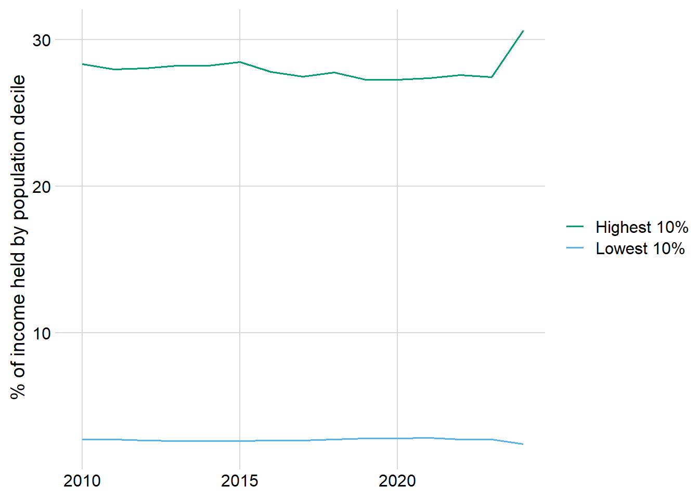

Show the code
url <- "https://sdmx.oecd.org/public/rest/data/OECD.WISE.RSB,DSD_SDG@DF_SDG_G_17,2.0/..17_2..._T._T._T._T._T.?startPeriod=2020&dimensionAtObservation=AllDimensions&format=csvfilewithlabels"
sdg1721 <- read.csv(url)url <- "https://sdmx.oecd.org/public/rest/data/OECD.WISE.RSB,DSD_SDG@DF_SDG_G_17,2.0/..17_2..._T._T._T._T._T.?startPeriod=2020&dimensionAtObservation=AllDimensions&format=csvfilewithlabels"
sdg1721 <- read.csv(url)codes <- c("17_2_1_DC_ODA_TOTGGE", "17_2_1_DC_ODA_LDCG")
sdg1721 |>
filter(SDG_SERIES == codes[1], TIME_PERIOD == 2024) |>
mutate(color = ifelse(OBS_VALUE > .7, "Y", "N")) |>
ggplot(aes(y = fct_reorder(Reference.area, OBS_VALUE), x = OBS_VALUE)) +
geom_vline(xintercept = .7, color = "gray30", linetype = "dashed", alpha = .7) +
geom_col(aes(fill = color)) +
geom_text(
aes(
label = scales::percent(OBS_VALUE, scale = 1, accuracy = .01),
x = OBS_VALUE + .01
),
hjust = 0
) +
scale_fill_manual(values = c("Y" = "#006fb7", "N" = colorspace::lighten("#006fb7", .8)), guide = "none") +
scale_x_continuous(NULL, expand = c(0, 0), labels = NULL, breaks = NULL) +
scale_y_discrete(NULL) +
theme_minimal_vgrid() +
theme(plot.margin = margin(r = 75), axis.ticks.x = element_blank()) +
coord_cartesian(clip = "off")
sdg1721 |>
filter(SDG_SERIES == codes[1]) |>
group_by(TIME_PERIOD) |>
summarize(m = mean(OBS_VALUE)) |>
ggplot(aes(x = TIME_PERIOD, y = m)) +
geom_line(color = "#006fb7") +
scale_x_continuous(NULL, expand = c(0, 0)) +
scale_y_continuous("average ODA on grant equivalent basis (% GNI)") +
theme_minimal_grid() +
theme(plot.margin = margin(r = 20))
url2 <- "https://sdmx.oecd.org/public/rest/data/OECD.DCD.FSD,DSD_DAC2@DF_DAC2A,/DAC.LDC+ALLR.206.USD.Q?startPeriod=2020&dimensionAtObservation=AllDimensions&format=csvfilewithlabels"
disburse <- read.csv(url2)
dac <- disburse |>
arrange(Recipient, TIME_PERIOD) |>
group_by(Recipient) |>
mutate(
lag = lag(OBS_VALUE),
pct_change = (OBS_VALUE - lag) / lag
)dac |>
ggplot(aes(x = TIME_PERIOD, y = OBS_VALUE)) +
geom_line(aes(color = Recipient)) +
scale_color_ghro("misc") +
scale_x_continuous(NULL) +
scale_y_continuous("Millions of US dollars, 2024", labels = scales::comma_format()) +
theme_minimal_grid()
Also the dataset detailed in the GHRIF should reflect that it is now measured on grant equivalent basis, which isn’t super clear from what it currently says?
reduction of ODA vs increase in defense = https://www.sipri.org/databases/milex
mention the names of countries that meet target, do not mention those that do not
cat of ODA that goes to human rights institutions - some on gender, refugees, etc.
look at before vs after taxes and social stuff free economy vs govt interference (you expect inequality to be reduced w govt interference)
gini <- read.csv(here("data/raw/gini.csv"), nrow = 265)
gini2 <- gini |>
pivot_longer(starts_with("X")) |>
mutate(
name = as.integer(str_sub(name, 2, 6)),
value = replace(value, value == "..", NA)
) |>
drop_na() |>
group_by(Country.Name) |>
filter(name == max(name))
bands <- data.frame(
level = factor(c("Low", "Moderately low", "Moderately high", "High", "Very high"), levels = c("Low", "Moderately low", "Moderately high", "High", "Very high")),
min = c(-Inf, 25, 30, 40, 45),
max = c(25, 30, 40, 45, Inf)
)
pal <- dichromat::colorschemes$DarkRedtoBlue.12[c(2, 4, 8, 10, 11)]
names(pal) <- bands$level
g1 <- gini2 |>
filter(name > 2015) |>
group_by(name) |>
summarize(
m = mean(as.numeric(value)),
n_countries = n()
) |>
ggplot(aes(x = name, y = m)) +
geom_rect(data = bands, aes(ymin = min, ymax = max, fill = level), xmax = Inf, xmin = -Inf, alpha = .5, inherit.aes = FALSE) +
scale_fill_manual(values = pal) +
geom_line() +
scale_x_continuous(NULL, expand = c(0, 0), breaks = seq(2016, 2025, by = 2)) +
scale_y_continuous("Gini index", limits = c(0, 55), expand = c(0, 0)) +
theme_minimal_grid() +
coord_cartesian(clip = "off") +
theme(plot.margin = margin(r = 10, t = 5), legend.position = "none") +
ggtitle("Non-weighted gini,\nnot filled")I feel like there is a more intuitive way to show this, because currently it shows it increasing which looks to be good
Notes: - SDG goal is below 30 - high inequality is above 40
library(patchwork)
pop <- read.csv(here("data/raw/unpop2000.csv")) |> select(Iso3, Time, Value)
test <- gini2 |>
ungroup() |>
mutate(name = as.integer(name)) |>
complete(nesting(Country.Name, Country.Code, Series.Name, Series.Code), name = 2000:2025) |>
arrange(Country.Name, name) |>
group_by(Country.Name) |>
fill(value, .direction = "down") |>
ungroup() |>
left_join(pop, by = c("Country.Code" = "Iso3", "name" = "Time"))
weighted_gini_by_year <- test %>%
mutate(value = as.numeric(value)) %>%
filter(!is.na(value)) %>%
group_by(name) %>%
summarise(
weighted_gini = sum(value * Value) / sum(Value),
n_countries = n()
)
weighted_gini_by_year# A tibble: 26 × 3
name weighted_gini n_countries
<int> <dbl> <int>
1 2000 40.6 1
2 2001 40.6 1
3 2002 40.6 1
4 2003 40.6 1
5 2004 40.6 1
6 2005 40.6 1
7 2006 40.6 1
8 2007 40.6 1
9 2008 40.6 1
10 2009 40.6 1
# ℹ 16 more rowsg2 <- weighted_gini_by_year |>
filter(name > 2015) |>
ggplot(aes(x = name, y = weighted_gini)) +
geom_rect(data = bands, aes(ymin = min, ymax = max, fill = level), xmax = Inf, xmin = -Inf, alpha = .5, inherit.aes = FALSE) +
scale_fill_manual(values = pal) +
geom_line() +
scale_x_continuous(NULL, expand = c(0, 0), breaks = seq(2016, 2025, by = 2)) +
scale_y_continuous("Gini index", limits = c(0, 55), expand = c(0, 0)) +
theme_minimal_grid() +
coord_cartesian(clip = "off") +
theme(plot.margin = margin(r = 10, t = 5), legend.position = "none") +
ggtitle("Weighted gini,\nfilled from 2020 on")
g3 <- test %>%
mutate(value = as.numeric(value)) %>%
filter(name > 2015) |>
filter(!is.na(value)) %>%
group_by(name) %>%
summarise(
m = mean(value),
n_countries = n()
) |>
ggplot(aes(x = name, y = m)) +
geom_rect(data = bands, aes(ymin = min, ymax = max, fill = level), xmax = Inf, xmin = -Inf, alpha = .5, inherit.aes = FALSE) +
scale_fill_manual(values = pal) +
geom_line() +
scale_x_continuous(NULL, expand = c(0, 0), breaks = seq(2016, 2025, by = 2)) +
scale_y_continuous("Gini index", limits = c(0, 55), expand = c(0, 0)) +
theme_minimal_grid() +
coord_cartesian(clip = "off") +
theme(plot.margin = margin(r = 10, t = 5), legend.position = "none") +
ggtitle("Non-weighted gini,\nfilled from 2020 on")
g1 + g2 + g3
test2 <- gini2 |>
ungroup() |>
mutate(name = as.integer(name)) |>
complete(nesting(Country.Name, Country.Code, Series.Name, Series.Code), name = 2000:2025) |>
arrange(Country.Name, name) |>
group_by(Country.Name) |>
fill(value, .direction = "down") |>
ungroup() |>
mutate(high_ineq = ifelse(as.numeric(value) >= 40, 1, 0))
#test2 |> distinct(Country.Name, value)sdg_gini <- readxl::read_excel(here("data/raw/SI_DST_FISP.xlsx")) |>
select(-SeriesCode, -Goal, -Target, -Indicator, -SeriesDescription) |>
pivot_longer(cols = `2007`:`2025`)
sdg_gini_avg <- sdg_gini |>
group_by(name, `Fiscal intervention stage`) |>
drop_na(value) |>
filter(value != NaN, !name %in% c(2007, 2025, 2013)) |>
summarize(
m = mean(as.numeric(value)),
n = n()
)
sdg_gini_avg |>
filter(`Fiscal intervention stage` != "POSTFIS_CON_INC") |>
ggplot(aes(x = as.integer(name), y = m)) +
geom_rect(data = bands, aes(ymin = min, ymax = max, fill = level), xmax = Inf, xmin = -Inf, alpha = .5, inherit.aes = FALSE) +
scale_fill_manual(values = pal) +
geom_line(aes(group = `Fiscal intervention stage`)) +
annotate("text", x = 2024, y = c(31.25, 41.4), label = c("Post-fiscal\ndisposable", "Pre-fiscal"), hjust = 0) +
annotate("text", x = 2014, y = c(20, 25, 30, 40, 45) + .1, label = c("Low", "Moderately low", "Moderately high", "High", "Very high"), color = colorspace::darken(pal, 0.3), vjust = 0, hjust = 0) +
scale_x_continuous(NULL, expand = c(0, 0), breaks = seq(2014, 2024, by = 2)) +
scale_y_continuous("Gini index", limits = c(20, 50), expand = c(0, 0)) +
theme_minimal_grid() +
theme(plot.margin = margin(r = 75, t = 5), legend.position = "none") +
coord_cartesian(clip = "off") 
sdg_gini_avg |>
select(name, `Fiscal intervention stage`, n) |>
pivot_wider(names_from = `Fiscal intervention stage`, values_from = n)# A tibble: 11 × 4
# Groups: name [11]
name POSTFIS_CON_INC POSTFIS_DIS_INC PREFIS_INC
<chr> <int> <int> <int>
1 2014 9 41 40
2 2015 12 44 43
3 2016 10 43 42
4 2017 17 48 47
5 2018 6 39 38
6 2019 13 45 45
7 2020 4 39 39
8 2021 3 34 34
9 2022 6 42 42
10 2023 4 32 31
11 2024 2 22 22sdg_gini |>
drop_na(value) |>
filter(`Fiscal intervention stage` != "POSTFIS_CON_INC", !name %in% c(2007, 2013, 2025)) |>
ggplot(aes(x = as.factor(name), y = as.numeric(value))) +
geom_boxplot() +
facet_wrap(~factor(`Fiscal intervention stage`, levels = c("PREFIS_INC", "POSTFIS_DIS_INC"), labels = c("Pre-fiscal", "Post-fiscal disposable"))) +
cowplot::theme_minimal_grid() +
panel_border() +
labs(x = NULL, y = "Gini index", title = "Distribution of Gini index in countries")
library(httr)
library(jsonlite)
library(dplyr)
base_url <- "https://data360api.worldbank.org/data360/data"
getWB <- function(indicator) {
database <- "WB_WDI"
page_size <- 1000
all_data <- list()
skip <- 0
i <- 1
repeat {
resp <- GET(base_url, query = list(
DATABASE_ID = database,
INDICATOR = indicator,
skip = skip
))
stop_for_status(resp)
parsed <- fromJSON(content(resp, as = "text", encoding = "UTF-8"), flatten = TRUE)
# The records are typically under a "value" field — check parsed$value or similar
# Adjust this depending on the actual JSON structure returned
records <- parsed$value
if (is.null(records) || length(records) == 0 || nrow(records) == 0) {
break
}
all_data[[i]] <- records
n_returned <- nrow(records)
cat("Fetched", n_returned, "records\n")
# Stop when we get less than a full page (last page)
if (n_returned < page_size) {
break
}
skip <- skip + page_size
i <- i + 1
}
bind_rows(all_data)
}
lowest10 <- getWB("WB_WDI_SI_DST_FRST_10")Fetched 1000 records
Fetched 1000 records
Fetched 430 recordslowest10$measure <- "Lowest 10%"
highest10 <- getWB("WB_WDI_SI_DST_10TH_10")Fetched 1000 records
Fetched 1000 records
Fetched 430 recordshighest10$measure <- "Highest 10%"
compare_deciles <- rbind(lowest10, highest10)
# making sure there's no disaggs
# compare_deciles |>
# group_by(TIME_PERIOD, measure) |>
# count(REF_AREA) |>
# filter(n > 1)
deciles <- compare_deciles |>
filter(between(as.integer(TIME_PERIOD), 2010, 2024)) |>
group_by(TIME_PERIOD, measure) |>
summarize(n = n(),
m = mean(as.numeric(OBS_VALUE)))
deciles |>
ggplot(aes(x = as.integer(TIME_PERIOD), y = m)) +
geom_line(aes(color = measure)) +
scale_color_ghro("misc") +
theme_minimal_grid() +
labs(x = NULL, y = "% of income held by population decile")